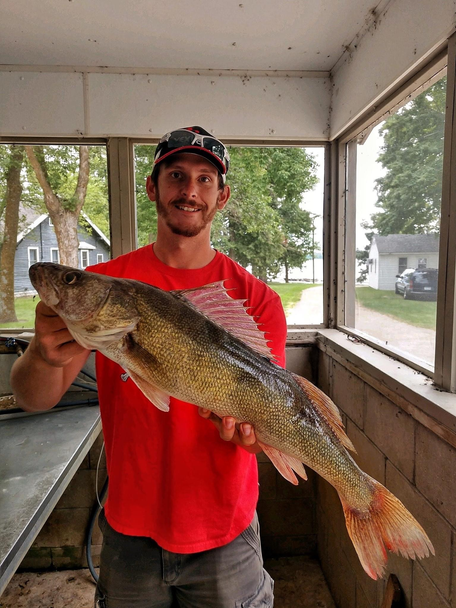

Welcome to Our Fishing Guide
Explore the rates and photos of our fishing trips!
Demo Guide Service is a premier fishing guide in southern Minnesota with over 20 years of experience helping anglers create unforgettable fishing adventures.

Equipment
- Vexilars
- Garmin Livescope
- Otter shelter
- Elliot, TUCR, and JT Outdoors Rods
- Latest tackle that the fish are biting on
What to Expect
What We Provide:
- All fishing gear (You may bring your own if you like)
- Rain gear (will check weather and plan with guest ahead of time)
- Electronics for every person
- All bait
- Optional catch and cook on the ice (extra cost)
What Guests Need to Provide:
- Jacket, bibs, boots, gloves, hats, etc.
- Camera
- Sunscreen, sunglasses, hats
- Snacks
What Does a Day on the Water Look Like?
We meet at the access point early in the morning. After discussing the day's goals and reviewing safety protocols, we head out to the best fishing spots, equipped with top-of-the-line gear and expert techniques. Depending on your preference, we can target walleye, bass, or panfish. A delicious catch-and-cook meal can be enjoyed on the ice for an additional cost.